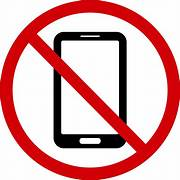
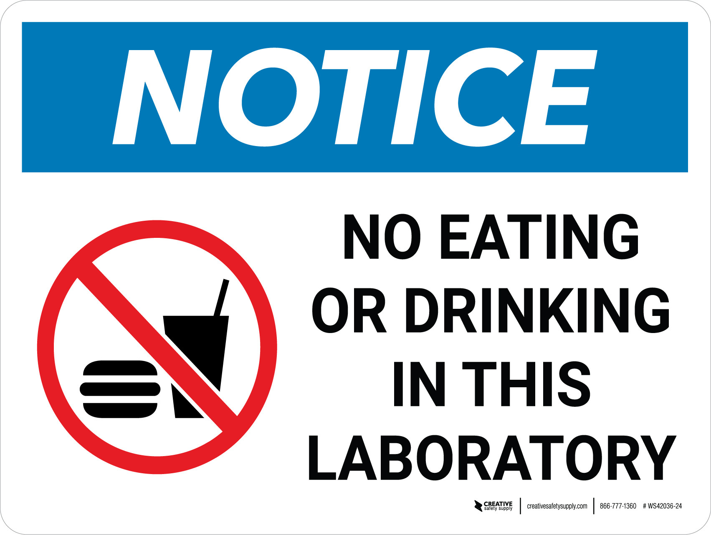
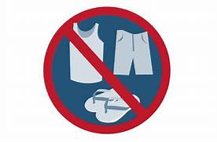
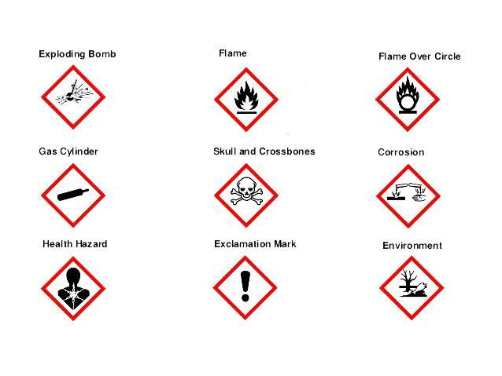
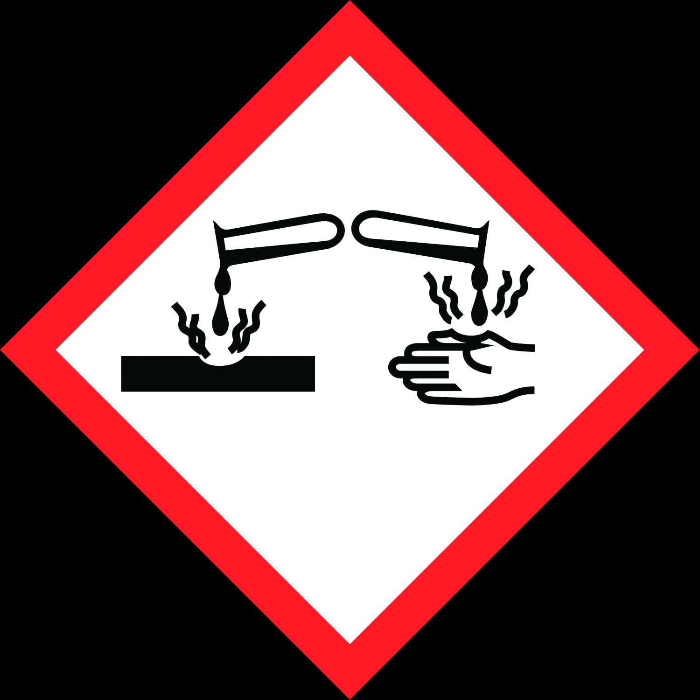
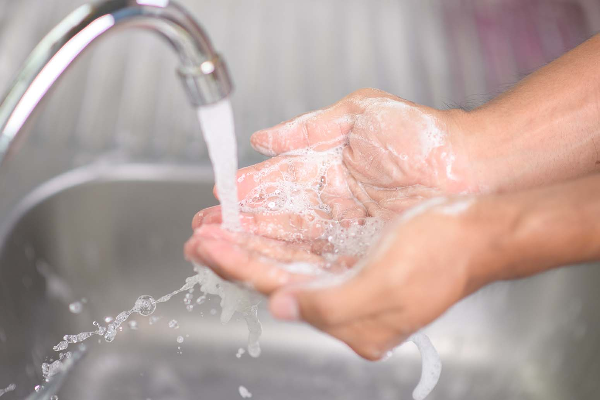
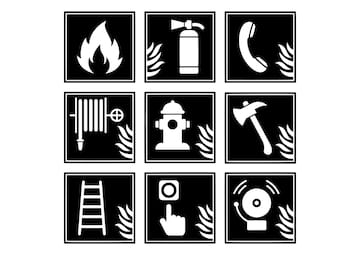
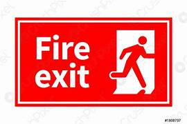

1. Aim
Safety in the chemistry laboratory.
2. Prior Concepts
Understanding of acids, bases, glassware, apparatus, etc.
3. Safety Equipment
Know the location, operation, and use of the following emergency equipment:
- Fire Extinguisher: Fixed on the wall near the exit of room no. 408LA.
- Fume Hoods: Located in the solution preparation room. Used to exhaust toxic or nauseous gases from the room.
- First Aid Kit: Next to the fire extinguisher, by the exit door of the 408 lab.
- Baking Soda (Sodium Bicarbonate): Used for neutralizing acid spills. Ask the lab assistant or instructor for it.


4. Getting Ready for the Chemistry Lab
- Prepare in advance for the lab by reading and understanding the assigned experiment to avoid accidents due to lack of comprehension of the procedure, technique, or equipment involved. Be familiar with safety precautions.
- Make a note of what you do not understand so it can be discussed at the beginning of the lab. Pay close attention to safety instructions and hazards. Do not ask classmates; ask your instructor.
- Conduct yourself in a responsible manner at all times. Assume responsibility for the safety of yourself and your neighbors. The lab is a community where students watch out for each other.
- Know what to do if there is a fire drill, earthquake, or other emergency. Containers must be closed, and gas valves and electrical equipment must be turned off.
5. General Rules of Conduct
- Students are not permitted in the chemistry lab without the presence of the instructor. No student may work without supervision.
- Only the authorized scheduled experiment can be performed. No unauthorized experiments are allowed.
- You are not allowed to alter the procedure of the lab experiment. Carefully follow all instructions.
- Eating, drinking, and chewing gum are strictly prohibited to avoid possible contamination. Chewing gum may absorb chemicals from the lab.
- Keep your work area neat and clean. Store your books and bags in the designated area, not on top of the lab floor.
- Keep shared areas of the laboratory clean (e.g., the balance room and the supply bench). It is especially important to keep the balance clean and free of chemical spills.
- Be alert. Notify the instructor immediately if you notice an unexpected chemical reaction.
- Mobiles are strictly prohibited in the laboratory during practicals, as radiation may ignite volatile liquids.
- Absolutely no noise or disruptive behavior. No fooling around.
- Do not run or walk quickly through the lab. Look behind you before backing up.
- Do not get involved in social conversation. Focus on your work and avoid distraction.
- Wash your hands as often as possible, especially before leaving the lab. Do not touch your eyes or body without washing your hands entirely first.
- Report all accidents (spills, broken glass) or injuries (burns, cuts, splashes) to the instructor immediately, regardless of how minor they are.
- Inform the instructor if you feel ill while working in the lab.
- Before leaving the laboratory, ensure your desktop, work area, floor, sink, and fume hood are clean. Wash your skin thoroughly.
- If you accidentally mix the wrong chemicals or do not follow the instructions, tell the instructor immediately.


6. Dress Code for the Lab
- If you come to the lab dressed unappropriately you will be asked to leave.
- Wear cotton lab apron complusory while performing practicals.Safety googles are advisable.
- Contact lenses may not be worn in the lab.Vapours and toxic fumes may get trapped beneath the contact lenses and harm your eyes.
- Wear clothes that provide maximun protection and covewr most of the skin.Short clothes and sandals are not allowed.Wear clothes that cover your torso and your legs to the knees.
- Clothes should be made of natural materials,such as cotton,that do not catch fire as easily as synthetic materials.
- Cover your feet by wearing shoes.Sandals and chappals should not be worn during laboratory sessions.
- Long hair,extremly loose clothing or clothes with long loose sleeves,and dangling jewelery can get caught a hazard.Avoid lose clothing and tie long hair back.

7. Handling of chemicals
Treat all chemicals in the laboratory as though they are hazardous
- Do not touch,or smell any chemical unless instructed to do so.When instructed to smell the chemical, you need to fan the air above the chemical towards your nose.Do not sniff the chemicals directly by bringing it close to your nose.If you do so,the odor may badly irritate your nassal passage.
- Do not touch your face,eyes,or mouth while in laboratory.If you must do so,first wash your hands.
- Hold chemical containers away from your body.
- Carefully check the label on the bottle before using its content.Make sure it is the correct chemical and correct concentration.
- Do not contaminate the chemicals:Never return used chemicals to their original containers.If you do so,will be contaminating it. Do not waste chemicals;do not take more than what is required.Chemicals used in laboratory are costly.
- Never move areagent bottle yo your bench.Leave the bottle to its designated area on the supply bench. Take your own container to the reagent bench to dispense the necessary amount of reagent that will take back to your lab bench.
- Handle corrosive chemicals to with extreme care.When diluting a concentrated acid,you must always add the acid slowly to the water while stirring to avoid spattering and releasing the heat all at once.In other words,ADD ACID.Never do the reverse for the result could be quite hazardous.
- Never pipette by mouth.
- Keep flammable liquids away from heat sources and open flames in the fume hoods.If aflammable liquid is ued in the laboratory,do not use an open flame at all.
- Alcohol used in the lab is chemically denatured.It has been tained with poison to make it unsuitable for drinking.
- Place solids into a beaker or weighing paoer before weighing on a balance.See that the balance is clean when finished.Brush off any spills.Take care in the use of the balance,they are expensive.


8. Handling Chemical Spills
- Notify your instructor of all chemicall spills immediately.
- For smaller chemicals spills on you,rinse with large amount of water for atleast 15 minutes.Get the instructors attension.
- Mercury spills as that due to broken mercury thermometers should br reported immediately to your instructor.Mercury gives off toxic vapor.Students are not allowed to clean up mercury spills. The instructor may evacuate lab untill cleaning and ventilation is complete.
- For a large chemical spill on a counter top or floor,immediately notify the instructor.Do not step on the spilled chemical.The instructor will advice you what to do.Chemicals spills must be cleaned immediately. Disposed of the collected contaminated chemical as instructed.Let the instructor clean up chemical spills.For small spills that can be cleaned up with a small amount of paper towel,avoid letting the chemical soak through the paper and touch your hands.

9. Working with Glassware
- Do not use the cracked or chipped glassware.Get replacement from the stockroom.
- Any broken glass must be cleaned up immediately.Follow the instructors guideline.Do not touch broken glass and do not attemot to clean broken glassware yourself,unless instructed to do so.
- Do not shake a thermometer.Lay thermometer on a towel to cool,away from the edge of the lab bench.
10. Use of Bunsen Burners
- If you are not sure how to light a Bunsen burner,ask your instructor.
- Before using the gas burner,check its gas hose for cracks.Notify the instructor if cracks are found.
- Stand back while lighting a glass burner.
- Never reach over a Bunsen burner to turn on/off.If you continue to smell gas,notify students around you. Their hoser or burner might be the one leaking.If the smell persists,notify the instructor.
- To turn off the gas burners,you need to turn off the gas outlet valves.
- Never leave a lit Bunsen burner unattended.If you need to step away from your bench,turn off the gas.
- Turn the Bunsen burner off immediately when not in use.
11. WHAT TO DO IN CASE OF ACCIDENT?
Any accident or injury to you or another person must be reported to the lab instructor immediately,no matter how small it may seem.Help other.
- 1. Burns: Small burns from touching hot objects should be placed under the running cold water for atleast 20 minutes. Major burns need immediate medical attension.Ask for medical aid immediately.
- 2. Chemicals that come in contact with eyes or face: Immediately,flush your eyes with running water from an eye wash station for atleast 15 minutes.Open the eyelids with fingers to force the eyes to stay open while flushing.If wearing contact lens,wash the eyes once,remove the contacts, then continue washing for atleast 15 minutes,Immediately seek medical attension.
- 3. Cuts: Small cuts should be rinsed.Bandages are available in First-Aid Kit.If bleeding is extensive,apply pressure on the wound.Seek mrdical help immediately.
- 4. Fires:
- a. When clothing catches,fire,STOP,do not run as this enhances a supply of air and increases flames.DROP to the floor and ROLL on the floor to smother the flames.Do not run to the fire blanket. People around you may wrap you with a fire blanket to smother the flame and keep it away from the face and neck.Never use fire extinguisher on a person!
- b. Let the instructor handle the Fire Extinguisher.Be prepare to leave the building if situation escalates.Turn off and secure all lab equipments.
- c. Use a cover plate or a watch glass to cover small contained fires;for example,if chemical inside a beaker is catching fire.


12. Quiz
All the students must take the safety quiz to show the understanding of all safety norms of engineering chemistry laboratory.